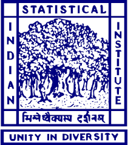

Keerti Panchakshari Charantimath| News | Experience | Projects | Interests | Contact | |

|
|
Hello people on the internet! I am a Software Engineer at Microsoft India, where I am working on developing Microsoft Cloud for Sustainability Products. Prior to this, I graduated among top of the batch, and received my Integrated Bachelors and Masters of Science in Mathematics and Computing from the Department of Mathematics, IIT Kharagpur. Feel free to drop me an e-mail if you want to chat with me! |
|
Oct '24 |
Started volunteering at eVidyaloka Trust's BRAIN initiative. |
|
Jul '24 |
Returned to Microsoft India as a full-time employee. |
|
May '24 |
Started Product Management Internship at Algozenith Technologies Private Limited. |
|
Sep '23 |
Received a return offer from Microsoft India for a full time role. |
|
Aug '23 |
Started working with Dr. Hari Shankar Mahato on the thesis project. |
|
May '23 |
Started Software Engineering Internship at Microsoft India guided by Mr. Subhajit Chatterjee. |
|
May '23 |
Led the residence hall fine-arts team to win Gold in Inter-Hall Fine Arts Cup by competing against 20 other halls. |
|
Jan '23 |
Won 3rd place in the Canvas Painting Event of Inter-IIT Socio-Cultural Meet 2022-23. |
|
Mar '22 |
Started volunteering with Gopali Youth Welfare Society. |
|
Sep '21 |
Awarded the IASc-INSA-NASI Summer Research Fellowship for working under Dr. Anil Kumar Ghosh. |
|
Aug '21 |
Started leading the university fine arts club as a Finance head. |
|
Apr '21 |
Started working as a research intern with Dr. Nithin Nagaraj. |
|
Jul '20 |
Earned a department change to Department of Mathematics by gaining a rank to top 1% of the batch. |
|
Jul '19 |
Started undergrad at IIT Kharagpur! |
|
Jun '19 |
Earned a rank in top 1% of JEE Mains and Advanced among 1 million+ aspirants. |

|
July 2024 - Present Working with Mr. Subhajit Chatterjee on developing and maintaining Microsoft Cloud for Sustainability products. Currently working on improving the product and code quality through automated tests and plugins. |
|
|
May 2024 - July 2024 Worked with Vivek Gupta and Shubham Patil on improving the Algozenith site. Improved the team operation, website navigation and developed features catering to the students' needs. |
|
|
May 2023 - June 2023 Worked under the guidance of Subhajeet Chatterjee to develop a feature for Microsoft Sustainability Manager Application. Developed a fully working feature with an automated back-end and a reactive front-end. |

|
Aug 2023 - May 2024 Thesis project under Dr. Hari Shankar Mahato at IIT Kharagpur focused on building a privacy-enhanced LLM-based chatbot. Achieved 98% accuracy in answering queries from private datasets while eliminating data leakage risks using encryption and secure embedding storage on IPFS, offering a secure alternative to cloud-based LLMs. |
|
|
Apr 2021 - Aug 2021 Worked as a Research Intern under Dr. Nithin Nagaraj and Dr. Aditi Kathpalia. at NIAS, IISc Campus, focusing on causal structure learning in time series. Developed and benchmarked models using Fourier transforms, chaotic maps, and machine learning, achieving 99% accuracy even in noisy and distribution-shifted scenarios. |
|

|
May 2021 - Jul 2021 Awarded the prestigious IASc-INSA-NASI Summer Research Fellowship to work under Prof. Anil Kumar Ghosh at ISI Kolkata. Researched statistical estimation methods like Maximum Likelihood and Method of Moments, developed an unbiased ranking model for incomplete data, and analyzed real-world cases, achieving alignment with the Bradley-Terry model. |
|
|
Jan 2021 - Apr 2021 Course project under Dr. Nirupam Chakraborti at IIT Kharagpur for the course project of "Genetic Algorithms In Engineering Process Modeling" course. Designed a genetic algorithms-based multi-class classifier and feature selector focused on comparing conventional classifiers with genetic algorithm-based models. |
This template is a modification to Jon Barron's website. Find the source code to my website here.